M3 Final PDF report
Professional report - 33 pages
Preview PDF
Source: Assignment2/ (01_eda.ipynb, 02_results.ipynb, 03_analysis.ipynb, train.py, evaluate.py, configs/a2.yaml). Reproduction commands: README. Checkpoints: rebuilt with the commands in the README (one best.pt per run). Slides: A2_M3_slides.pdf. YouTube video: pending.
Problem and data description
Problem statement
Tomato diseases are usually recognised by looking at the leaves: spots, blight lesions, mould, mosaic patterns or curling. A model that names the disease from one photograph of a leaf could support early treatment in the field. The task is single-label image classification with eight classes: seven diseases and one healthy class.
Input and output. Given an RGB image x ∈ ℝ3×224×224 (after resizing and normalisation), a model fθ outputs eight class scores (logits) and predicts ŷ = argmaxk fθ(x)k. The prediction unit is one image. Parameters are learned by minimising the cross-entropy between the logits and the label on the training set.
Main difficulties. (1) Several diseases produce small, similar lesions (Bacterial spot, Early blight, Late blight, Septoria leaf spot), and the cues are only a few pixels wide at 224×224. (2) The classes are imbalanced (9.7 to 1). (3) The dataset mixes two sources: uniform laboratory crops and a small share of web or field photographs with clutter, several leaves and different lighting. (4) The published split contains near-duplicate photographs across partitions, some with a different label (Section ).
Research question. How much does ImageNet pretraining help on this specialised task compared with a small CNN trained from scratch, and which fine-tuning choices (frozen vs full backbone, augmentation strength, backbone family) matter for accuracy, macro-F1, accuracy on web-style photos and compute cost?
Dataset source, licence and proposal status
The Tomato Leaves Dataset [1] combines the tomato classes of PlantVillage [2] and PlantDoc [3]. PlantVillage images are photographs of single detached leaves taken under controlled conditions; PlantDoc images were collected from the web and show leaves in the field. Each image carries one class label, given by the folder name. We use the Hugging Face copy shreemunale/tomato-leaves-dataset, pinned to revision c029791, licence CC BY 4.0.
| Item | Value |
|---|---|
| Dataset proposal (A2-M1) | Status Approved; the proposal is linked from the assignment page (M1 Proposal) |
| Track | Image classification (Section 19.1 of the handbook: ≥5 classes, ≥5,000 training images; MNIST and Fashion-MNIST not used) |
| Classes | 8 (7 diseases + healthy); 14,404 training images, smallest training class 509 images |
| Download | Assignment2/download.py: 17,996 JPEG/PNG files, 475 MB |
| Cache | data/tomato/images_224.npz: all images resized once to 224×224 uint8, 2.7 GB |
| Labelling | One label per image from the source folder; no bounding boxes or masks |
Bias and limitations of the data. Most images come from one laboratory setting, so a model can reach high accuracy without learning to handle field conditions. The file names are anonymised, so the source of an image cannot be read directly. Label quality was not checked by an expert; Section shows near-duplicate pairs with different labels.
Read the dataset
Source: Assignment2/01_eda.ipynb. Images are listed by partition and folder; the label is the folder name.
| Class | train | validation | test | Total |
|---|---|---|---|---|
| Bacterial spot | 1930 | 235 | 241 | 2406 |
| Early blight | 966 | 131 | 117 | 1214 |
| Late blight | 1710 | 210 | 209 | 2129 |
| Leaf mold | 999 | 120 | 125 | 1244 |
| Septoria leaf spot | 1771 | 210 | 223 | 2204 |
| Tomato yellow leaf curl virus | 4930 | 624 | 625 | 6179 |
| Tomato mosaic virus | 509 | 66 | 59 | 634 |
| Healthy | 1589 | 200 | 197 | 1986 |
| Total | 14404 | 1796 | 1796 | 17996 |
The published split holds 17,996 images: 14,404 for training and 1,796 each for validation and test. These counts match the M1 proposal. Tomato yellow leaf curl virus is the largest class (6,179 images, 4,930 in training) and Tomato mosaic virus the smallest (634 images, 509 in training). The smallest test class therefore has 59 images, so one image changes its recall by about 1.7 points.
Class distribution and imbalance
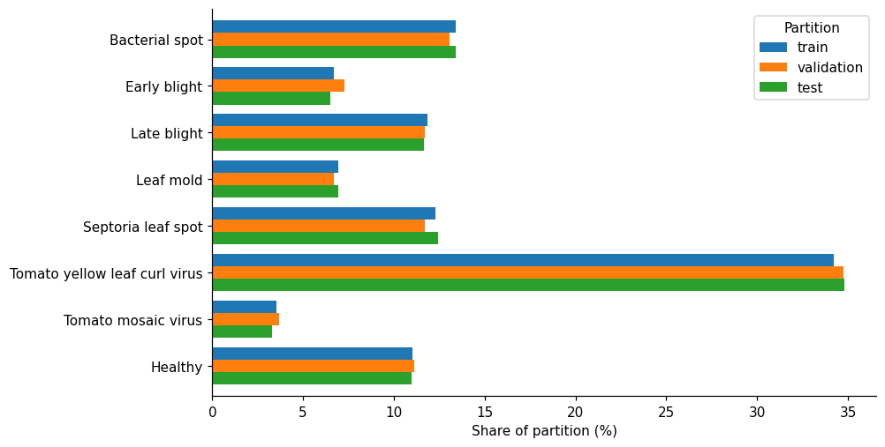
| Value | |
|---|---|
| Largest class | Tomato yellow leaf curl virus (6,179) |
| Smallest class | Tomato mosaic virus (634) |
| Imbalance ratio | 9.7 |
The largest class is 9.7 times the size of the smallest. The three partitions have almost the same class shares, so validation and test scores describe the same label mix as training. Accuracy alone would be dominated by the large virus class, so all experiments report macro-F1 and use validation macro-F1 to select checkpoints.
Original image size and file format
Only the image headers are read to learn the original resolution before the resize to 224×224.
| width | height | |
|---|---|---|
| mean | 285.9 | 279.8 |
| std | 223.6 | 186.9 |
| min | 115 | 85 |
| median | 256 | 256 |
| max | 6000 | 6000 |
| width | height | images |
|---|---|---|
| 256 | 256 | 16889 |
| 224 | 224 | 317 |
| 800 | 600 | 23 |
| 1600 | 1200 | 19 |
| 1024 | 768 | 15 |
| format | mode | images |
|---|---|---|
| JPEG | RGB | 17995 |
| PNG | RGBA | 1 |
17,995 files are RGB JPEG and one is an RGBA PNG, which the loader converts to RGB. 16,889 images (93.9%) are 256×256; 317 are 224×224, and the rest range from 115×85 to 6000×6000. Resizing every image to 224×224 therefore leaves most of the data almost unchanged, but it stretches the minority of non-square images.
Image sources
PlantVillage photographs are 256×256 crops, while PlantDoc images are web photographs of mixed size. Because file names are anonymised, we use the original size as a rough source label: an image whose size is not 256×256 is called web-style.
| Class | 256 x 256 | Web-style | Web-style share (%) |
|---|---|---|---|
| Bacterial spot | 2274 | 132 | 5.5 |
| Early blight | 1108 | 106 | 8.7 |
| Late blight | 2004 | 125 | 5.9 |
| Leaf mold | 1110 | 134 | 10.8 |
| Septoria leaf spot | 1995 | 209 | 9.5 |
| Tomato yellow leaf curl virus | 5990 | 189 | 3.1 |
| Tomato mosaic virus | 539 | 95 | 15.0 |
| Healthy | 1869 | 117 | 5.9 |
| train | 13457 | 947 | 6.6 |
| validation | 1718 | 78 | 4.3 |
| test | 1714 | 82 | 4.6 |
6.6% of training images (947) are web-style, against 4.3% of validation and 4.6% of test images. The share varies by class, from 3.1% for Tomato yellow leaf curl virus to 15.0% for Tomato mosaic virus. A class may therefore partly be recognised by image style rather than by disease. The test set has only 82 web-style images, so one image is about 1.2 points of web-style accuracy. The size rule is a proxy, not a verified source label.
Representative images
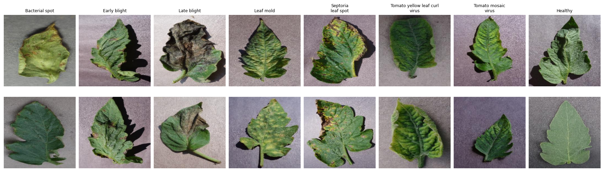
Most sampled images show a single leaf on a plain grey background. The disease cues are small: spots, yellow areas, curled edges or dark patches. Early blight, Septoria leaf spot and Bacterial spot look alike at this size, so fine texture will matter for the models.
Colour and brightness
| Class | R | G | B | Brightness |
|---|---|---|---|---|
| Bacterial spot | 102.4 | 109.7 | 93.3 | 101.8 |
| Early blight | 109.3 | 114.0 | 100.4 | 107.9 |
| Late blight | 113.2 | 115.4 | 101.8 | 110.1 |
| Leaf mold | 111.4 | 117.8 | 111.7 | 113.7 |
| Septoria leaf spot | 129.5 | 132.4 | 117.0 | 126.3 |
| Tomato yellow leaf curl virus | 111.8 | 119.7 | 89.9 | 107.2 |
| Tomato mosaic virus | 116.9 | 118.1 | 114.0 | 116.3 |
| Healthy | 114.3 | 119.6 | 109.8 | 114.6 |
| Training mean (0–1) | 0.4438 | 0.4660 | 0.3936 |
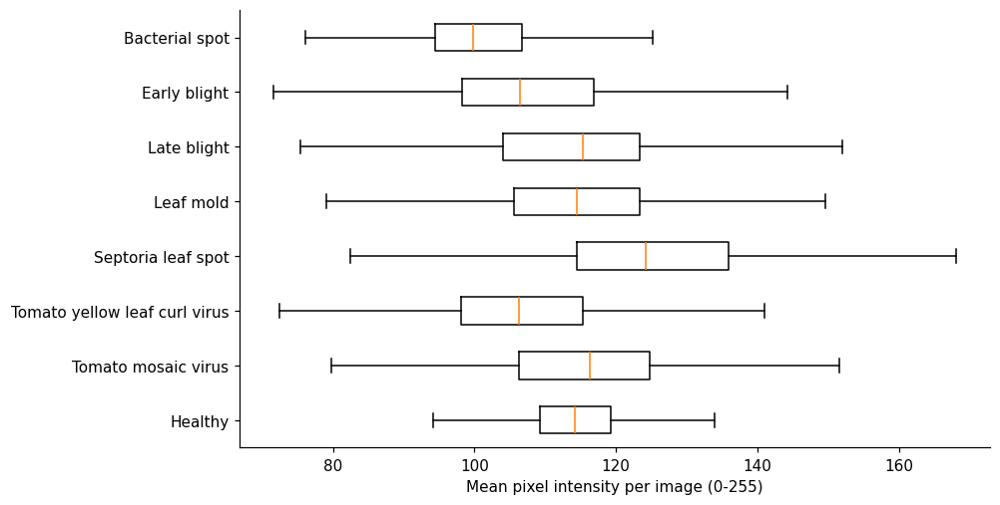
Septoria leaf spot images are the brightest (126.3) and Bacterial spot the darkest (101.8). Tomato yellow leaf curl virus has the lowest blue value (89.9). Colour carries some class information, but it may also reflect lighting or background differences between sources. The training mean (0.444, 0.466, 0.394) is close to the ImageNet mean used for normalisation.
Duplicates and leakage between partitions
The M1 proposal requires that an original photograph and its copies stay in one partition. We test this on the published split in two ways: byte-identical files (MD5) and visually near-identical images, found with a 64-bit difference hash and a Hamming distance of at most 4.
| Partition | Images | Identical hash | Near duplicate (d≤4) | Same label as match |
|---|---|---|---|---|
| validation | 1796 | 5 | 88 (4.9%) | 55 |
| test | 1796 | 3 | 88 (4.9%) | 63 |
| train (within itself) | 14404 | 719 | 2873 (19.9%) |
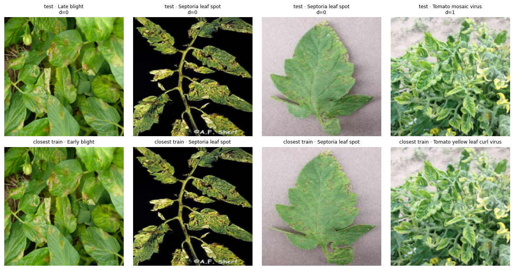
Exact copies are rare (29 pairs), but 88 validation and 88 test images (4.9%) have a training image within Hamming distance 4, and only 63 of the 88 test matches carry the same label. The four closest pairs are clearly the same photograph, and two of them have different labels. The published split therefore does not fully meet the leakage rule of the proposal, and the data contain some conflicting labels. With a threshold of 4 some matches may only be similar images, so the counts are an upper bound on true duplicates.
Data splitting
| Item | Decision |
|---|---|
| Split | Official split published with the dataset (train / validation / test folders), 14,404 / 1,796 / 1,796 |
| Seed | The split is fixed and does not depend on a seed. Training seeds 42–46 change only weight initialisation, shuffling and augmentation |
| Stratification | Not applied by us; the published partitions already have almost equal class shares (Figure 1) |
| Split unit | One image. No leaf or plant identifier exists, so a group split is impossible without an image-similarity rule |
| Leakage control | Option B of the M2 plan: keep the published split for comparability with M1/M2, and report every main model on a clean test subset of 1,708 images without the 88 near-duplicates (Section ) |
| Test use | The test set is evaluated once per run after the checkpoint is chosen on validation macro-F1 |
| Subset rules | None: all eight classes and all 17,996 images are used |
Preprocessing
- Decoding and resizing. Every file is converted to RGB and resized once to 224×224 with bilinear interpolation (no crop). The result is cached as a uint8 array so later runs do not decode JPEG files again.
- Normalisation. Pixels are scaled to [0,1] and standardised with the ImageNet mean (0.485, 0.456, 0.406) and standard deviation (0.229, 0.224, 0.225), which the pretrained backbones expect. The same statistics are used for the CNN so that all models see identical inputs.
- Augmentation (training only).
flip: random horizontal and vertical flips (p=0.5 each), the default for all main runs.strong(ablation):flipplusRandomResizedCrop(scale 0.6–1.0, ratio 0.75–1.33) andColorJitter(brightness, contrast and saturation 0.3, hue 0.05). - Cleaning. No image is removed or relabelled. The RGBA file is converted to RGB. Conflicting near-duplicates are kept, because removing them would change the published test set.
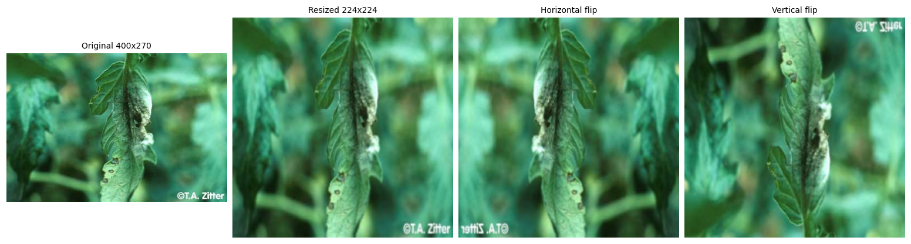
python data_loader.py # one training batch after preprocessing
Train: 14404 | validation: 1796 | test: 1796
Images: (64, 3, 224, 224) torch.float32 | labels: (64,) torch.int64One training batch holds 64 float32 images of shape 3×224×224 and 64 int64 labels in {0,…,7}; every model returns logits of shape [64, 8]. For the first batch of seed 42 the normalised values range from -2.12 to 2.59, the per-channel means are (-0.17, 0.08, -0.09) and the standard deviations (0.79, 0.73, 0.90): close to, but not exactly, zero and one, because the statistics come from ImageNet rather than from this dataset. The batch contains all eight classes (from 3 to 22 images each).
EDA conclusions
| Evidence from the exploration | Implication |
|---|---|
| 8 classes, 17,996 images, 9.7 to 1 imbalance | Report macro-F1 and per-class F1; select checkpoints on validation macro-F1 |
| 94% of images are 256×256 lab crops | A 224×224 resize keeps nearly all detail; pretrained ImageNet inputs fit directly |
| About 6% web-style photos, unevenly spread over classes | Report accuracy on the web-style subset separately; test whether augmentation helps this subset |
| 4.9% of test images have a near-duplicate in training, some with another label | Keep the split, but score every model on the clean subset as well |
| Similar small lesions in four classes | Expect spot / blight confusion; inspect it in the error analysis |
Methodology
Pipeline
All models share one data pipeline, one training loop and one evaluation protocol. Only the model block and the settings named in each experiment change between runs.
Raw JPEG files HF rev. c029791 → RGB, resize 224×224, uint8 cache → Dataset / DataLoader B=64, flip or strong augmentation → CNN, ResNet-18 (frozen / full), EfficientNet-B0, ConvNeXt-T → Logits [B,8] cross-entropy → Adam update, clip 5.0, fixed budget → Validation macro-F1 selects best.pt → Test: argmax (no post-processing) → Evaluation: accuracy, macro-F1, per-class F1, confusion matrix, clean-test and web-style subsets, error groups, training and inference time
Self-implemented vs library code. We wrote the download script, the image cache, the TomatoDataset class with its augmentation presets, the small CNN, the wrappers that load pretrained backbones and replace their heads, the freezing logic, the config-driven training loop with checkpoint selection, evaluation and timing, and all analysis notebooks. Libraries: PyTorch [10] (layers, autograd, Adam, DataLoader), torchvision (ResNet-18, EfficientNet-B0 and ConvNeXt-Tiny definitions and ImageNet weights, v2 transforms), NumPy and Pillow (arrays and image decoding), scikit-learn (accuracy, F1, confusion matrix), pandas and Matplotlib (tables and figures), huggingface_hub (file listing) and PyYAML (config).
Data and inputs
x = (pixel / 255 - mean) / std mean = (0.485, 0.456, 0.406), std = (0.229, 0.224, 0.225)
images: float32 [B, 3, 224, 224] B = 64, partial last batch kept
labels: int64 [B] values 0 ... 7
logits: float32 [B, 8] output of every modelTomatoDataset keeps the cached images as uint8 and normalises each image in __getitem__, which saves memory (2.7 GB instead of 10.8 GB as float32). Augmentation runs on the uint8 tensor before normalisation. Only the training loader shuffles, with a generator seeded by the run seed; all loaders use zero worker processes, so the order and the random augmentation are reproducible for a given seed and device.
Model definitions
Let B be the batch size. All models output eight raw logits; softmax is applied only to read probabilities, never before the cross-entropy loss.
| Model | Role | Inductive bias / expected strength and limit | Params | Trainable |
|---|---|---|---|---|
| CNN | Simple baseline | Local filters and pooling, trained from scratch / cheap, but must learn every feature from 14k images | 61,384 | 61,384 |
| ResNet-18 frozen | Pretrained, linear probe | Fixed ImageNet features, new head / very cheap to train, features not adapted to leaf lesions | 11,180,616 | 4,104 |
| ResNet-18 full | Pretrained, fine-tuned | ImageNet features adapted end to end / strong, but can overfit quickly | 11,180,616 | 11,180,616 |
| EfficientNet-B0 | Backbone B (follow-up) | Depthwise convolutions, squeeze-and-excitation / fewer parameters | 4,017,796 | 4,017,796 |
| ConvNeXt-Tiny | Backbone C (follow-up) | Modernised ConvNet: 7×7 depthwise kernels, LayerNorm / strongest, but 2.5 times the parameters | 27,826,280 | 27,826,280 |
CNN: a small baseline trained from scratch
Four blocks of 3×3 convolution, batch normalisation [8], ReLU and 2×2 max pooling reduce the image to a 64×7×7 feature map. Global average pooling, dropout 0.3 and a linear layer give the logits. The first convolution uses stride 2 because a full-resolution convolution at 224×224 is slow on the CPU.
class CNN(nn.Module):
# small baseline trained from scratch
def __init__(self):
super().__init__()
def block(inputs, outputs, stride=1):
return [nn.Conv2d(inputs, outputs, 3,
stride=stride, padding=1),
nn.BatchNorm2d(outputs), nn.ReLU(),
nn.MaxPool2d(2)]
self.layers = nn.Sequential(
*block(3, 16, stride=2), *block(16, 32),
*block(32, 64), *block(64, 64),
nn.AdaptiveAvgPool2d(1), nn.Flatten(),
nn.Dropout(0.3), nn.Linear(64, 8))
def forward(self, images):
return self.layers(images)input [B, 3, 224, 224]
│ conv s2 3->16 [B, 16, 112, 112]
│ maxpool [B, 16, 56, 56]
│ conv 16->32 [B, 32, 56, 56]
│ maxpool [B, 32, 28, 28]
│ conv 32->64 [B, 64, 28, 28]
│ maxpool [B, 64, 14, 14]
│ conv 64->64 [B, 64, 14, 14]
│ maxpool [B, 64, 7, 7]
│ avgpool+flat [B, 64]
│ dropout 0.3 [B, 64]
│ linear 64->8 [B, 8]
▼
output [B, 8]
parameters: conv 60,512
+ batch norm 352 + linear 520
= 61,384ResNet-18: frozen backbone and full fine-tuning
ResNet-18 [4] stacks residual blocks y = F(x) + x in four stages. We load the torchvision ImageNet-1K weights [5] and replace the 1000-class layer by a new 512→8 layer. Frozen: only the new layer is trained (4,104 parameters) and every backbone module stays in evaluation mode, so batch-normalisation statistics are not updated either. Full fine-tuning: all 11.2M parameters are trained, at a ten times lower learning rate so the pretrained features change slowly.
class ResNet18(nn.Module):
def __init__(self, freeze_backbone):
super().__init__()
self.net = resnet18(
weights=ResNet18_Weights.IMAGENET1K_V1)
self.net.fc = nn.Linear(self.net.fc.in_features, 8)
self.freeze_backbone = freeze_backbone
if freeze_backbone:
for name, p in self.net.named_parameters():
p.requires_grad = name.startswith("fc.")
def train(self, mode=True):
super().train(mode)
if self.freeze_backbone:
# frozen layers keep their BatchNorm statistics
for name, module in self.net.named_children():
if name != "fc":
module.eval()
return selfinput [B, 3, 224, 224]
│ conv1 7x7 s2 [B, 64, 112, 112]
│ maxpool s2 [B, 64, 56, 56]
│ layer1 [B, 64, 56, 56]
│ layer2 [B, 128, 28, 28]
│ layer3 [B, 256, 14, 14]
│ layer4 [B, 512, 7, 7]
│ avgpool+flat [B, 512]
│ fc 512->8 [B, 8]
▼
output [B, 8]
head: 512 x 8 + 8 = 4,104
backbone: 11,176,512
total: 11,180,616Follow-up backbones: EfficientNet-B0 and ConvNeXt-Tiny
For the backbone experiment (Experiment 5) two more ImageNet-pretrained families from torchvision are fine-tuned with exactly the ResNet-18 recipe. Each wrapper replaces only the last linear layer (file models/backbones.py).
- EfficientNet-B0 [6]: inverted residual blocks with depthwise convolutions and squeeze-and-excitation, scaled by a compound rule. Features [B,1280,7,7]→ average pool → dropout 0.2 → linear 1280→8 (10,248 parameters). Total 4.0M parameters.
- ConvNeXt-Tiny [7]: a ResNet redesigned with Transformer-era choices (4×4 patchify stem, 7×7 depthwise convolutions, LayerNorm, GELU, inverted bottlenecks). Features [B,768,7,7]→ average pool → LayerNorm → linear 768→8 (6,152 parameters). Total 27.8M parameters.
Fine-tuning procedure and training settings
All settings come from one committed file, configs/a2.yaml, and were fixed before the runs. No hyperparameter search was run on validation or test data; the only change from the M2 draft is the CNN budget (12 to 25 epochs), because the M2 CNN selected its last epoch.
| Setting | Value |
|---|---|
| Fine-tuning protocol | Replace the ImageNet head by a randomly initialised →8 linear layer; frozen: train the head only (lr 10-3, 6 epochs); full: train all layers from the pretrained weights (lr 10-4, 4 epochs). No layer-wise learning rates, no warm-up |
| Optimizer | Adam [9] (β=(0.9, 0.999)), no weight decay, no learning-rate scheduler |
| Epoch budget | CNN 25; ResNet-18 frozen 6; full fine-tuning 4 (8 in Experiment 4). Every epoch runs; no early stopping |
| Batch size | 64 for training and evaluation |
| Gradient clipping | Total norm 5.0; a non-finite loss or gradient stops the run |
| Regularisation | Flip augmentation (strong augmentation in the ablation); dropout 0.3 in the CNN; the torchvision defaults of the follow-up backbones (EfficientNet-B0: dropout 0.2 and stochastic depth 0.2; ConvNeXt-T: stochastic depth 0.1) |
| Checkpoint rule | Highest validation macro-F1; the earliest epoch wins an exact tie. Reported metrics use these weights |
| Seeds | 42, 43, 44, 45, 46 per configuration. A seed sets Python, NumPy and PyTorch (CPU and CUDA) and the shuffle generator. The split never changes |
| Hardware | Main study: one CPU, 14 PyTorch threads, float32. Follow-up study: one NVIDIA A40 (48 GB) per run, float32, cuDNN deterministic mode, no mixed precision |
The learning rate and epoch budget differ between the frozen and the full ResNet-18 because the two start from different situations: a new head alone needs a larger step, while full fine-tuning at 10-3 risks destroying the pretrained features. This makes the main comparison a comparison of two recipes; Experiment 3 removes this confound.
Loss, metrics and timing
For logits z and target y the loss is ℓ(z,y) = -zy + logΣk=18exp(zk), averaged over the batch; epoch loss weights batches by image count.
- Accuracy and macro-F1 (primary metric, the unweighted mean of the eight per-class F1 = 2TP/(2TP+FP+FN); undefined scores count as 0). Macro-F1 keeps the small classes visible despite the 9.7 to 1 imbalance.
- Subset metrics: accuracy on the 82 web-style and 1,714 256×256 test images, and macro-F1 on the 1,708-image clean test subset.
- Training time: all epochs including validation, history writes and best-weight copies; excludes data download and caching.
- Inference time: median of two complete passes over the test set after one warm-up pass, divided by the number of images. It includes batch loading, normalisation, the forward pass and argmax (with a CUDA synchronisation on the GPU), so it measures batched throughput, not the latency of a single request.
- Aggregation: mean ± sample standard deviation (SD) over the five seeds.
Experiment design
| E1: main comparison (CPU) | E2: augmentation ablation (CPU) | E3: frozen vs full at a matched schedule (GPU) | |
|---|---|---|---|
| Hypothesis | Full fine-tuning of ImageNet ResNet-18 beats the CNN trained from scratch; the frozen backbone is weaker than full fine-tuning | Strong augmentation improves accuracy on web-style test images | The frozen model is weaker because its features are not adapted, not because of its different learning rate and budget |
| Changed factor | Model and training recipe | Augmentation: flip vs strong | Trainable layers: head only vs all |
| Fixed factors | Split, preprocessing, flip augmentation, batch size, optimizer, clipping, checkpoint rule, seeds, hardware | Everything in ResNet18FineTune (model, weights, lr 10-4, 4 epochs, seeds) | Learning rate and epochs inside each pair: (10-3, 6) and (10-4, 4); everything else |
| Metrics | Test macro-F1; accuracy, per-class F1, cost | Web-style accuracy (main), test macro-F1 (check) | Test macro-F1; web-style accuracy |
| Decision rule | A gap is supported if the difference of means is larger than the larger seed SD of the two models | Supported if the mean paired web-style gain exceeds the baseline seed SD and macro-F1 drops by at most 0.5 points (set before training) | Supported if full beats frozen by more than the larger seed SD at both schedules |
| E4: augmentation, 8 epochs (GPU) | E5: backbone A vs B (GPU) | Hardware check (GPU) | |
|---|---|---|---|
| Hypothesis | E2 failed because 4 epochs are too short for the harder augmented task; with 8 epochs strong augmentation helps web-style images | A stronger modern backbone (ConvNeXt-T) improves macro-F1 and web-style accuracy; EfficientNet-B0 matches ResNet-18 with fewer parameters | GPU copies of the CPU recipes reproduce the CPU results |
| Changed factor | Augmentation: flip vs strong | Backbone: ResNet-18, EfficientNet-B0, ConvNeXt-T | Device: CPU vs GPU |
| Fixed factors | ResNet-18 full, lr 10-4, 8 epochs, seeds | Full fine-tuning, lr 10-4, 4 epochs, flip, Adam, batch 64, seeds | Every setting of CNN, ResNet18Frozen and ResNet18FineTune |
| Metrics | Web-style accuracy; test macro-F1 | Test macro-F1, web-style accuracy, parameters, time | Test macro-F1 |
| Decision rule | Same rule as E2 | Same rule as E1 (larger seed SD) | Difference of means within the larger seed SD |
Training and validation loop
The same function trains (with an optimizer) and validates (without). The excerpt below from train.py shows the update path; fit() calls it once per epoch, keeps a copy of the weights with the best validation macro-F1, and writes history.csv, best.pt, checkpoint_info.json and a learning-curve figure.
def run_epoch(model, loader, optimizer=None, log_every=0, max_steps=0, device=DEVICE):
training = optimizer is not None
model.train(training)
with torch.set_grad_enabled(training):
for step, (images, targets) in enumerate(loader, 1):
images, targets = images.to(device), targets.to(device)
if training:
optimizer.zero_grad(set_to_none=True)
logits = model(images)
loss = nn.functional.cross_entropy(logits, targets)
if not torch.isfinite(loss):
raise FloatingPointError("non-finite loss")
if training:
loss.backward()
nn.utils.clip_grad_norm_(model.parameters(), CLIP_NORM, error_if_nonfinite=True)
optimizer.step()
... # accumulate loss, labels and predictionsThe training metrics in history.csv are measured during the epoch, with augmentation and dropout active. After training, fit() reloads the selected weights and measures the training set again without augmentation; these fixed-weight numbers are the ones in the result tables.
Reproduction and recorded environment
pip install -r requirements.txt # Python 3.12
cd Assignment2
python download.py # 17,996 files, revision c029791
python data_loader.py # builds data/tomato/images_224.npz once
python train.py CNN ResNet18Frozen ResNet18FineTune ResNet18FineTuneStrongAug # E1, E2 (CPU)
python train.py G_CNN G_ResNet18Frozen G_ResNet18FineTune G_ResNet18FrozenLR1e-4 \
G_ResNet18FineTuneLR1e-3 G_ResNet18FineTune8ep G_ResNet18FineTune8epStrongAug \
G_EfficientNetB0FineTune G_ConvNeXtTinyFineTune # E3-E5 (GPU)
python evaluate.py # metrics.json + predictions per run
jupyter nbconvert --execute --inplace 02_results.ipynb 03_analysis.ipynbEvery run folder outputs/<run>_seed<seed>_<time>/ holds best.pt, checkpoint_info.json (configuration, commit, environment), history.csv, metrics.json and the validation and test predictions. The 20 CPU runs were trained from commit 6869700 (tag a2-final-runs); their console output is committed in Assignment2/logs/. The 45 GPU runs were trained from commit ba6072f plus the follow-up changes described in Section (the checkpoints therefore record source_uncommitted = true); these changes are committed together with this report.
| Main study (E1, E2) | Follow-up study (hardware check, E3–E5) | |
|---|---|---|
| Hardware | One CPU, 14 PyTorch threads | One NVIDIA A40 (48 GB) per run, one run per card; host CPU AMD EPYC 7543, 14 threads |
| Source | Commit 6869700, tag a2-final-runs | Commit ba6072f + follow-up changes |
| Software | Python, PyTorch and library versions recorded in each checkpoint_info.json | Python 3.12.16, PyTorch 2.14.0 (CUDA 13.0), torchvision 0.29.2, NumPy 2.5.3, scikit-learn 1.9.1, pandas 3.0.5 |
| Precision | float32 | float32, cuDNN deterministic mode, no mixed precision |
| Checkpoints | best.pt per run (link on the assignment page) | best.pt per run: 45 MB for ResNet-18, 111 MB for ConvNeXt-T |
Implementation results
Sources: Assignment2/02_results.ipynb (E1, E2: 20 CPU runs) and Assignment2/03_analysis.ipynb (hardware check and E3–E5: 45 GPU runs). Every value is mean ± SD over seeds 42–46 unless stated otherwise.
Saved runs and traceability
| Run | Seeds | Epochs | lr | Aug. | Selected epoch per seed (42–46) |
|---|---|---|---|---|---|
| CNN | 5 | 25 | 10-3 | flip | 24, 21, 22, 20, 22 |
| ResNet18Frozen | 5 | 6 | 10-3 | flip | 4, 6, 6, 5, 5 |
| ResNet18FineTune | 5 | 4 | 10-4 | flip | 4, 4, 3, 3, 4 |
| ResNet18FineTuneStrongAug | 5 | 4 | 10-4 | strong | 3, 4, 4, 3, 2 |
All four models have results for the same five seeds, all from commit 6869700 on the same CPU, so differences between models do not come from code, hardware or seeds. Two runs (the two fine-tuned models with seed 46) are flagged as uncommitted because an untracked draft notebook was in the folder; git diff against the commit is empty for the training code and config, so both runs are kept.
Training behaviour
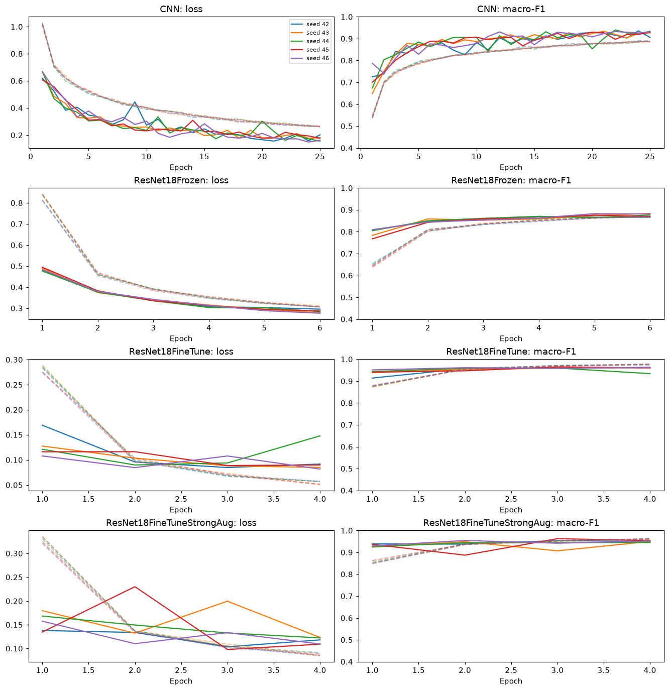
- CNN: selects epochs 20–24, so the 25-epoch budget is enough (the M2 run with 12 epochs selected its last epoch). Validation macro-F1 levels off around 0.92–0.93 after epoch 15.
- Frozen ResNet-18: smooth, almost identical curves across seeds. Two seeds select the last epoch, but epochs 4–6 differ by less than one point: the linear head is close to converged, and the limit is the fixed features.
- Full fine-tuning: selects epoch 3 or 4. Training loss keeps falling while validation loss stops improving after epoch 2–3 and rises at epoch 4 for seed 44, so overfitting starts inside the four-epoch budget.
- Strong augmentation: validation loss is noisier and training loss stays higher; with the same four epochs, the harder task may be less converged (tested in E4).
Training curves sit below validation curves for the CNN and the frozen model because they are measured with augmentation and dropout. With the selected weights and no augmentation (Table ) the CNN and the frozen model score about the same on training and test, so they underfit; full fine-tuning has the largest train–test gap (98.5 vs 95.9 macro-F1), a sign of mild overfitting.
Implementation issues and fixes. (1) In M2 the computer paused during one fine-tuning run, which made its stored training time unusable. In M3 the seed SD of the total training time is at most 0.8 minutes for every configuration (Table ), so no M3 run shows such a pause. (2) The CNN budget was too short in M2 (selected epoch 12 of 12) and was raised to 25. (3) Hyperparameters were hard-coded in train.py in M2; they moved to configs/a2.yaml, which each checkpoint records, and a –smoke mode writes test runs to a separate folder that evaluation never reads. (4) Some source file names contain “?”, which Windows cannot store; download.py replaces it. (5) For the GPU runs, timing needed a torch.cuda.synchronize() before the clock stops, because GPU kernels run asynchronously.
Quantitative results
| Validation | Test | |||||
|---|---|---|---|---|---|---|
| Model | Loss | Accuracy | Macro-F1 | Loss | Accuracy | Macro-F1 |
| CNN | 0.170 ± 0.011 | 0.953 ± 0.002 | 0.934 ± 0.004 | 0.176 ± 0.011 | 0.947 ± 0.007 | 0.927 ± 0.008 |
| ResNet18Frozen | 0.291 ± 0.011 | 0.913 ± 0.003 | 0.878 ± 0.006 | 0.303 ± 0.015 | 0.911 ± 0.006 | 0.875 ± 0.007 |
| ResNet18FineTune | 0.088 ± 0.005 | 0.974 ± 0.001 | 0.962 ± 0.002 | 0.089 ± 0.004 | 0.971 ± 0.002 | 0.959 ± 0.002 |
| ResNet18FineTuneStrongAug | 0.111 ± 0.011 | 0.966 ± 0.005 | 0.953 ± 0.007 | 0.110 ± 0.004 | 0.963 ± 0.003 | 0.946 ± 0.005 |
| Training set, selected weights, no augmentation | ||||
|---|---|---|---|---|
| Model | Loss | Accuracy | Macro-F1 | Train - test macro-F1 |
| CNN | 0.217 ± 0.013 | 0.931 ± 0.004 | 0.909 ± 0.004 | -1.9 |
| ResNet18Frozen | 0.307 ± 0.018 | 0.905 ± 0.004 | 0.871 ± 0.006 | -0.3 |
| ResNet18FineTune | 0.036 ± 0.007 | 0.989 ± 0.003 | 0.985 ± 0.004 | 2.6 |
| ResNet18FineTuneStrongAug | 0.075 ± 0.017 | 0.975 ± 0.006 | 0.967 ± 0.008 | 2.0 |
| Test macro-F1 | 42 | 43 | 44 | 45 | 46 |
|---|---|---|---|---|---|
| CNN | 0.9330 | 0.9195 | 0.9320 | 0.9175 | 0.9343 |
| ResNet18Frozen | 0.8648 | 0.8831 | 0.8790 | 0.8692 | 0.8763 |
| ResNet18FineTune | 0.9597 | 0.9595 | 0.9619 | 0.9568 | 0.9577 |
| ResNet18FineTuneStrongAug | 0.9444 | 0.9403 | 0.9532 | 0.9465 | 0.9471 |
E1 decision. The ranking on test macro-F1 is ResNet18FineTune (0.959 ± 0.002), ResNet18FineTuneStrongAug (0.946 ± 0.005), CNN (0.927 ± 0.008), ResNet18Frozen (0.875 ± 0.007). The order is identical in all five seeds and every gap between neighbours is more than twice the larger seed SD, so the E1 hypothesis is supported in its first part: full fine-tuning beats the CNN trained from scratch by 3.2 macro-F1 points. Its second part also holds, the frozen backbone is far below full fine-tuning (8.5 points), and it is even 5.3 points below the 61K-parameter CNN. Because the frozen and the full model use different learning rates and budgets, E3 checks whether this gap is caused by freezing itself.
Per-class F1
| Class | CNN | R18 frozen | R18 fine-tune | R18 strong aug. | Test images |
|---|---|---|---|---|---|
| Bacterial spot | 0.955 ± 0.008 | 0.901 ± 0.006 | 0.964 ± 0.007 | 0.957 ± 0.012 | 241 |
| Early blight | 0.835 ± 0.014 | 0.739 ± 0.020 | 0.943 ± 0.012 | 0.908 ± 0.021 | 117 |
| Late blight | 0.901 ± 0.017 | 0.869 ± 0.012 | 0.962 ± 0.010 | 0.951 ± 0.012 | 209 |
| Leaf mold | 0.897 ± 0.020 | 0.832 ± 0.011 | 0.937 ± 0.013 | 0.923 ± 0.018 | 125 |
| Septoria leaf spot | 0.936 ± 0.012 | 0.880 ± 0.009 | 0.960 ± 0.009 | 0.951 ± 0.015 | 223 |
| Tomato yellow leaf curl virus | 0.986 ± 0.006 | 0.978 ± 0.004 | 0.993 ± 0.002 | 0.993 ± 0.001 | 625 |
| Tomato mosaic virus | 0.932 ± 0.008 | 0.825 ± 0.016 | 0.931 ± 0.012 | 0.918 ± 0.023 | 59 |
| Healthy | 0.975 ± 0.010 | 0.971 ± 0.009 | 0.982 ± 0.004 | 0.969 ± 0.008 | 197 |
Early blight is the hardest class for the CNN (0.835) and the frozen model (0.739); fine-tuning raises it to 0.943, the largest per-class gain. Tomato mosaic virus does not improve with fine-tuning (CNN 0.932, fine-tune 0.931); it has only 59 test images, so its scores are the least precise. Strong augmentation is below plain fine-tuning in 7 of 8 classes and equal on Tomato yellow leaf curl virus.
Confusion matrices
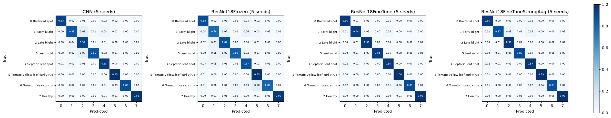
For the CNN and the frozen model the largest errors are between leaf-spot and blight diseases: Early blight and Leaf mold predicted as Late blight (8% each for the CNN, 6–7% for the frozen model) and Early blight predicted as Septoria leaf spot (4–6%). Fine-tuning removes most of these; Early blight predicted as Late blight drops to about 1%. One confusion stays in every model: Tomato mosaic virus predicted as Tomato yellow leaf curl virus (CNN 3%, frozen 10%, fine-tune 6%, strong augmentation 4%), which after fine-tuning comes almost only from web-style photos (Section ).
Leakage check: published vs clean test
| Model | Macro-F1, all 1,796 | Macro-F1, clean 1,708 | Acc., 88 near-dup. | Acc., clean 1,708 |
|---|---|---|---|---|
| CNN | 0.927 ± 0.008 | 0.927 ± 0.008 | 0.973 ± 0.006 | 0.946 ± 0.007 |
| ResNet18Frozen | 0.875 ± 0.007 | 0.875 ± 0.007 | 0.955 ± 0.014 | 0.909 ± 0.006 |
| ResNet18FineTune | 0.959 ± 0.002 | 0.960 ± 0.002 | 0.975 ± 0.005 | 0.971 ± 0.002 |
| ResNet18FineTuneStrongAug | 0.946 ± 0.005 | 0.947 ± 0.005 | 0.980 ± 0.005 | 0.962 ± 0.004 |
Removing the near-duplicates changes test macro-F1 by at most 0.11 points (fine-tune: +0.11 ± 0.04), well within the seed SD, and the ranking does not change. Keeping the published split therefore does not affect any conclusion. Near-duplicates are easier for every model, as expected when a copy was seen in training; the frozen model gains most (+4.5 points), plain fine-tuning only +0.4. With 88 images one image is 1.1 points.
E2: augmentation ablation (CPU)
The two runs with the same seed differ only in augmentation, so they are compared in pairs.
| Metric | Flip (baseline) | Strong | Paired change | Seeds improved |
|---|---|---|---|---|
| Test macro-F1 | 0.959 ± 0.002 | 0.946 ± 0.005 | -1.28 ± 0.43 pt | 0/5 |
| Accuracy, 82 web-style images | 0.488 ± 0.029 | 0.432 ± 0.014 | -5.6 ± 3.1 pt | 0/5 |
| Accuracy, 1,714 images of 256 x 256 | 0.994 ± 0.002 | 0.988 ± 0.003 | -0.62 ± 0.12 pt | 0/5 |
E2 decision: not supported. The rule needed a web-style gain larger than the baseline SD (2.9 points) and a macro-F1 drop of at most 0.5 points; both conditions fail. Strong augmentation lowered all three metrics in all five seeds. The size of the web-style drop is imprecise (1 to 7 of 82 images), and the result holds only for a four-epoch budget and generic crops and colour changes; E4 repeats it with eight epochs.
Follow-up experiments on the GPU
Source: Assignment2/03_analysis.ipynb. 9 configurations × 5 seeds, one NVIDIA A40 per run. All rules were fixed before these runs (Section 2.6).
Hardware check
| Recipe | CPU test macro-F1 | GPU test macro-F1 | GPU - CPU | Larger SD |
|---|---|---|---|---|
| CNN | 0.9273 ± 0.0081 | 0.9292 ± 0.0084 | +0.0019 | 0.0084 |
| ResNet18Frozen | 0.8745 ± 0.0074 | 0.8746 ± 0.0072 | +0.0002 | 0.0074 |
| ResNet18FineTune | 0.9591 ± 0.0020 | 0.9583 ± 0.0023 | -0.0008 | 0.0023 |
All three differences are smaller than the larger seed SD, so the GPU copies reproduce the CPU results. They also serve as the controls of E3 and E5. The same 82 web-style, 88 near-duplicate and 1,708 clean test images were found in our new download of the data.
| Run (GPU) | Epochs | lr | Test acc. | Test macro-F1 | Web-style acc. | 256 x 256 acc. |
|---|---|---|---|---|---|---|
| G_CNN | 25 | 10-3 | 0.948 ± 0.006 | 0.929 ± 0.008 | 0.256 ± 0.036 | 0.981 ± 0.006 |
| G_ResNet18Frozen | 6 | 10-3 | 0.911 ± 0.005 | 0.875 ± 0.007 | 0.307 ± 0.032 | 0.940 ± 0.005 |
| G_ResNet18FineTune | 4 | 10-4 | 0.971 ± 0.002 | 0.958 ± 0.002 | 0.485 ± 0.023 | 0.994 ± 0.002 |
| G_ResNet18FrozenLR1e-4 | 4 | 10-4 | 0.814 ± 0.008 | 0.702 ± 0.023 | 0.222 ± 0.023 | 0.842 ± 0.008 |
| G_ResNet18FineTuneLR1e-3 | 6 | 10-3 | 0.959 ± 0.003 | 0.942 ± 0.003 | 0.412 ± 0.032 | 0.985 ± 0.002 |
| G_ResNet18FineTune8ep | 8 | 10-4 | 0.975 ± 0.002 | 0.963 ± 0.003 | 0.510 ± 0.026 | 0.997 ± 0.001 |
| G_ResNet18FineTune8epStrongAug | 8 | 10-4 | 0.966 ± 0.005 | 0.953 ± 0.008 | 0.466 ± 0.064 | 0.990 ± 0.003 |
| G_EfficientNetB0FineTune | 4 | 10-4 | 0.977 ± 0.002 | 0.967 ± 0.003 | 0.549 ± 0.021 | 0.997 ± 0.001 |
| G_ConvNeXtTinyFineTune | 4 | 10-4 | 0.979 ± 0.002 | 0.970 ± 0.002 | 0.615 ± 0.037 | 0.996 ± 0.002 |
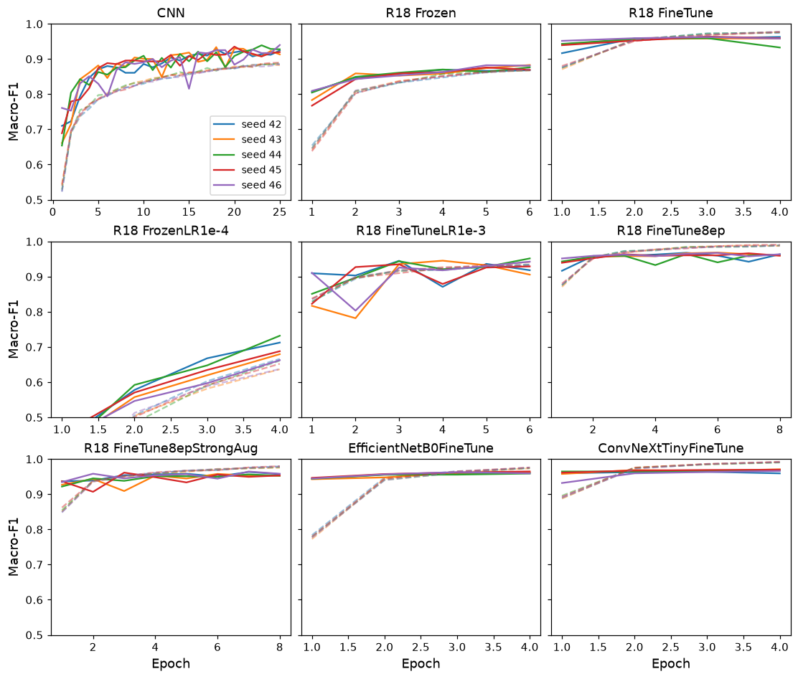
The curves explain several results below. The frozen model at 10-4 is still climbing at epoch 4 (it selects its last epoch in every seed). Full fine-tuning at 10-3 jumps around: seed 46 falls to 0.80 at epoch 2, so the large step disturbs the pretrained features. EfficientNet-B0 and ConvNeXt-T are above 0.93 validation macro-F1 after one epoch.
E3: frozen vs full fine-tuning at the same schedule
| Schedule | Trained | Trainable | Test macro-F1 | Web-style acc. | Training min |
|---|---|---|---|---|---|
| lr 10-3, 6 epochs | head only | 4,104 | 0.875 ± 0.007 | 0.307 ± 0.032 | 1.5 |
| all layers | 11.18M | 0.942 ± 0.003 | 0.412 ± 0.032 | 2.2 | |
| lr 10-4, 4 epochs | head only | 4,104 | 0.702 ± 0.023 | 0.222 ± 0.023 | 1.0 |
| all layers | 11.18M | 0.958 ± 0.002 | 0.485 ± 0.023 | 1.5 |
E3 decision: supported. At the frozen model's own schedule, full fine-tuning is still 6.8 points better, far more than the larger seed SD (0.7). So the 8.5-point gap of the main study is caused by freezing, not by the different learning rate. The learning rate interacts with freezing: the head alone needs the larger step (0.875 at 10-3 against 0.702 at 10-4), while full fine-tuning prefers the smaller one (0.958 against 0.942). Each recipe of the main study was therefore the better choice for its model, and the main comparison was fair to both.
E4: augmentation ablation with 8 epochs
| Metric | Flip, 8 ep. | Strong, 8 ep. | Paired change | Seeds improved |
|---|---|---|---|---|
| Test macro-F1 | 0.963 ± 0.003 | 0.953 ± 0.008 | -1.08 ± 0.75 pt | 1/5 |
| Accuracy, 82 web-style images | 0.510 ± 0.026 | 0.466 ± 0.064 | -4.4 ± 7.3 pt | 1/5 |
| Accuracy, 1,714 images of 256 x 256 | 0.997 ± 0.001 | 0.990 ± 0.003 | -0.70 ± 0.32 pt | 0/5 |
E4 decision: not supported. With twice the budget, strong augmentation still lowers web-style accuracy and macro-F1, and it wins in only one seed. The strong runs now select epochs 6–7 in four seeds, so they had time to converge; the short budget was not why E2 failed. The extra epochs help plain flip instead (macro-F1 0.958 to 0.963, web-style 0.485 to 0.510). The large SD with strong augmentation (6.4 points on web-style images) also makes it less stable.
E5: backbone A vs B
| Backbone | Params | Test acc. | Test macro-F1 | Web-style acc. | Errors / seed |
|---|---|---|---|---|---|
| ResNet-18 | 11.18M | 0.971 ± 0.002 | 0.958 ± 0.002 | 0.485 ± 0.023 | 52.0 ± 2.8 |
| EfficientNet-B0 | 4.02M | 0.977 ± 0.002 | 0.967 ± 0.003 | 0.549 ± 0.021 | 41.4 ± 3.5 |
| ConvNeXt-T | 27.83M | 0.979 ± 0.002 | 0.970 ± 0.002 | 0.615 ± 0.037 | 37.8 ± 3.7 |
| Test F1 per class | ResNet-18 | EfficientNet-B0 | ConvNeXt-T | Images |
|---|---|---|---|---|
| Bacterial spot | 0.966 ± 0.008 | 0.970 ± 0.004 | 0.969 ± 0.007 | 241 |
| Early blight | 0.922 ± 0.016 | 0.957 ± 0.010 | 0.954 ± 0.009 | 117 |
| Late blight | 0.964 ± 0.008 | 0.973 ± 0.005 | 0.976 ± 0.004 | 209 |
| Leaf mold | 0.935 ± 0.009 | 0.941 ± 0.009 | 0.956 ± 0.007 | 125 |
| Septoria leaf spot | 0.963 ± 0.008 | 0.976 ± 0.009 | 0.967 ± 0.009 | 223 |
| Tomato yellow leaf curl virus | 0.994 ± 0.002 | 0.994 ± 0.001 | 0.997 ± 0.002 | 625 |
| Tomato mosaic virus | 0.940 ± 0.007 | 0.941 ± 0.011 | 0.947 ± 0.009 | 59 |
| Healthy | 0.982 ± 0.006 | 0.981 ± 0.004 | 0.991 ± 0.002 | 197 |
E5 decision: supported for both. ConvNeXt-T is 1.1 points above ResNet-18 (larger SD 0.2) and EfficientNet-B0 0.8 points (larger SD 0.3), in 5 of 5 seeds. The gain is far larger on web-style photos: +12.9 points for ConvNeXt-T and +6.3 for EfficientNet-B0, also in every seed. ConvNeXt-T cuts web-style errors from 42.2 to 31.6 per seed, which is most of its gain. EfficientNet-B0 has the fewest spot / blight errors (2.2 per seed) and lifts Early blight from 0.922 to 0.957 with 2.8 times fewer parameters than ResNet-18.
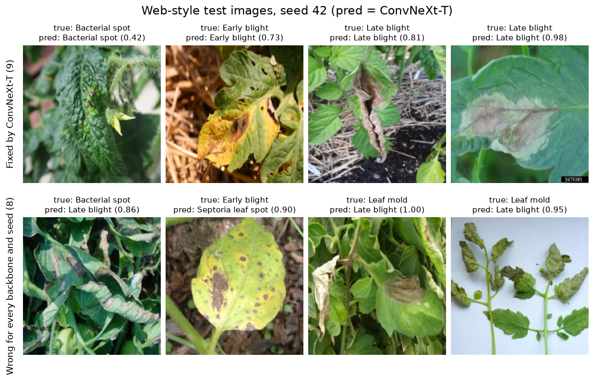
In seed 42 ConvNeXt-T fixes 9 web-style images of ResNet-18 but also breaks 7, so the per-seed change is noisy; over five seeds the net gain is 10.6 images. The fixed images usually show one leaf or one lesion large in the frame. 8 of the 82 web-style images are wrong for every backbone and seed: many overlapping leaves, fruit in view, or a cut plant on a white background, often predicted with high confidence (Leaf mold as Late blight at 1.00). Some of these may be hard for a person without the source label.
Error analysis
Each test error is put in the first group that matches, so the groups do not overlap: (1) web-style photo: original size not 256×256; (2) conflicting near-duplicate: a near-duplicate of a training image with a different label; (3) virus confusion: true and predicted classes are the two virus classes; (4) spot / blight confusion: both classes are among Bacterial spot, Early blight, Late blight and Septoria leaf spot; (5) other.
| Errors per seed (of 1,796) | CNN | R18 frozen | R18 fine-tune | R18 strong aug. |
|---|---|---|---|---|
| Web-style photo (82 images) | 58.8 ± 3.6 | 56.8 ± 2.6 | 42.0 ± 2.3 | 46.6 ± 1.1 |
| Conflicting near-duplicate (25 images) | 0.0 ± 0.0 | 1.0 ± 0.0 | 0.0 ± 0.0 | 0.0 ± 0.0 |
| Virus confusion | 0.0 ± 0.0 | 2.8 ± 1.3 | 0.2 ± 0.4 | 0.2 ± 0.4 |
| Spot / blight confusion | 22.8 ± 4.1 | 54.0 ± 4.3 | 6.2 ± 1.9 | 11.4 ± 4.1 |
| Other | 13.8 ± 6.1 | 44.8 ± 6.5 | 3.2 ± 1.8 | 8.6 ± 4.7 |
| All errors | 95.4 ± 12.6 | 159.4 ± 10.0 | 51.6 ± 3.6 | 66.8 ± 6.0 |
| Web-style share of errors | 61.6% | 35.6% | 81.4% | 69.8% |
| Error rate on web-style images | 71.7% | 69.3% | 51.2% | 56.8% |
| Error rate on 256×256 images | 2.1% | 6.0% | 0.6% | 1.2% |
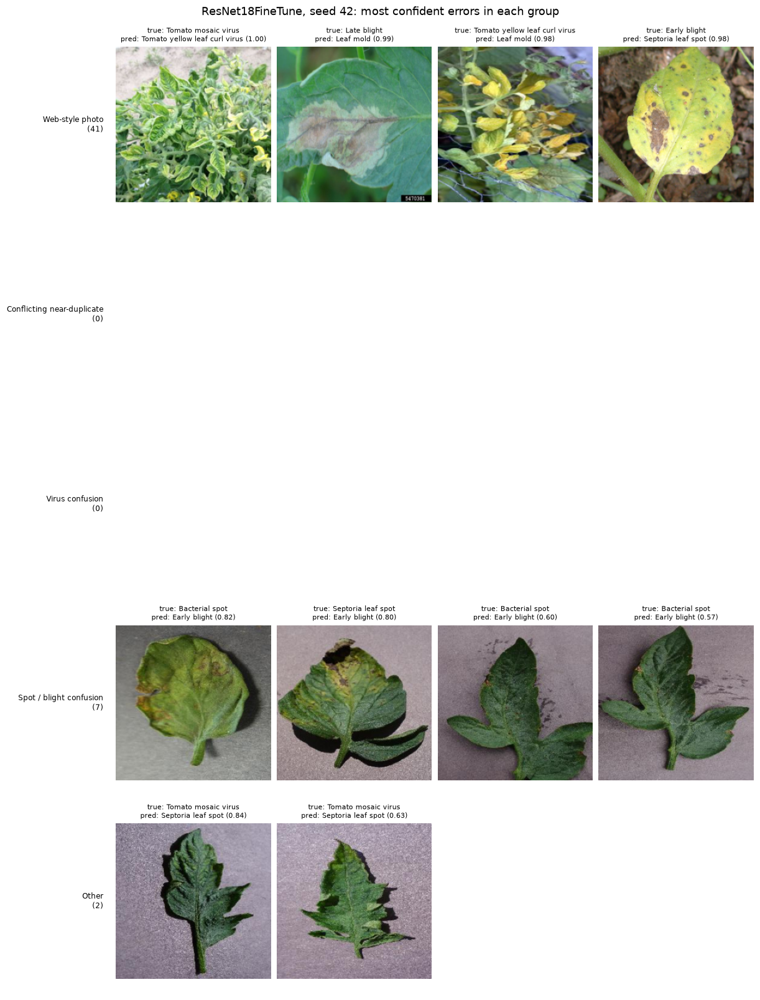
| Group | What the errors look like | Hypothesised cause | Improvement idea |
|---|---|---|---|
| Web-style photo | Field or web photos with several leaves, busy background, other lighting; often wrong with confidence above 0.9 | Domain shift: only 6.6% of training images are web-style | More field images; crop or segment the leaf first; report the subset separately |
| Conflicting near-duplicate | At most 1 error per seed | Most hash matches with another label are not true copies, or they are web-style and counted there | Check the 25 pairs by eye; group-aware re-split |
| Virus confusion | Mosaic predicted as yellow leaf curl or the reverse; rare outside web photos | Similar yellowing; mosaic is the smallest class (509 training images) | Class-weighted loss or oversampling |
| Spot / blight confusion | Small lesions confused among four leaf-spot diseases | Fine lesion detail is partly lost at 224×224; frozen ImageNet features do not separate them | Full fine-tuning (done); higher resolution |
| Other | Lab photos; for the best model mainly Tomato mosaic virus predicted as Septoria leaf spot | Mild mottling without clear lesions; small class | More mosaic images; class-weighted loss |
Web-style photos are the dominant error source. For the fine-tuned model they cause 42.0 of 51.6 errors per seed (81%): about half of the 82 web-style images are wrong in every seed, against 0.6% of the lab images. From the CNN to fine-tuning, errors on lab images fall from 36.6 to 9.6 per seed (-74%), but web-style errors fall only from 58.8 to 42.0 (-29%). Fine-tuning fixes most lab errors, not the domain gap. The frozen model has by far the most spot / blight errors (54.0 per seed), matching its weak Early blight score. Conflicting near-duplicates cause almost no errors, so label noise from duplicate photos is not a measurable error source.
Qualitative results
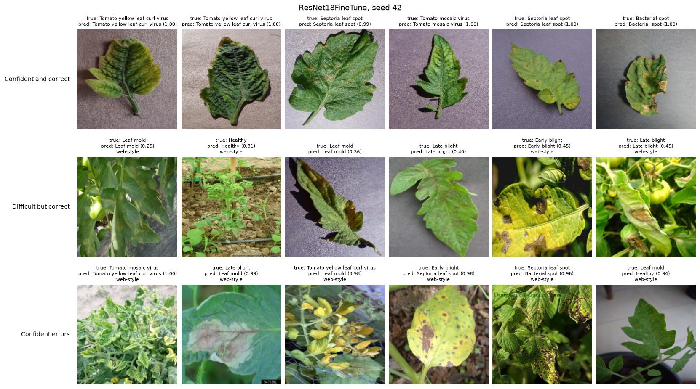
Confident correct predictions are lab photos: one leaf on a plain background with clear symptoms. The difficult but correct predictions have low confidence (0.25 to 0.45), and four of the six are web-style photos with several leaves, fruit or soil in view. All six confident errors are web-style photos, wrong with confidence 0.94 to 1.00: the model is overconfident on field photos, so its confidence cannot be used to flag them. One error may be a label problem: an image labelled Leaf mold (predicted Healthy, 0.94) shows no clear symptom on the visible side of the leaf; this cannot be confirmed from the photo alone. Section adds web-style examples that a stronger backbone fixes and examples that no model gets right.
Compute cost
| Model (CPU, 14 threads) | Params | Trainable | Epochs | s / epoch | Training min | Inference ms / image |
|---|---|---|---|---|---|---|
| CNN | 61,384 | 61,384 | 25 | 70 ± 1 | 29.3 ± 0.6 | 2.95 ± 0.04 |
| ResNet18Frozen | 11.18M | 4,104 | 6 | 366 ± 1 | 36.6 ± 0.1 | 23.04 ± 0.44 |
| ResNet18FineTune | 11.18M | 11.18M | 4 | 581 ± 3 | 38.7 ± 0.2 | 23.41 ± 0.24 |
| ResNet18FineTuneStrongAug | 11.18M | 11.18M | 4 | 673 ± 14 | 44.8 ± 0.8 | 23.70 ± 0.08 |
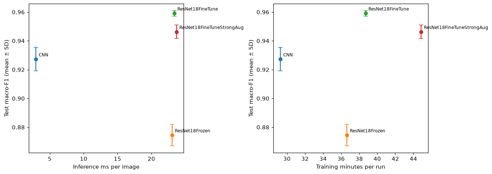
On the CPU the CNN is the cheapest model: 29 minutes of training and 3.0 ms per image. ResNet-18 needs 23–24 ms per image, eight times slower, for every variant because they share one architecture. Full fine-tuning costs 9 more minutes of training (+32%) than the CNN and eight times its inference time for 3.2 more macro-F1 points. The frozen model trains only 4,104 parameters, yet each epoch still passes every image through the whole backbone, so an epoch takes 366 s, five times the CNN; with the lowest score, it is the worst trade-off here. Strong augmentation adds 16% time per epoch because its transforms run on the CPU. Training minutes compare full recipes, since the epoch budgets differ.
| Run (one A40) | Params | s / epoch | Training min | GPU ms / img | CPU ms / img | Test macro-F1 |
|---|---|---|---|---|---|---|
| G_CNN | 0.06M | 12.3 | 5.24 | 0.49 | 1.8 | 0.929 |
| G_ResNet18Frozen | 11.18M | 15.1 | 1.53 | 0.52 | 0.875 | |
| G_ResNet18FineTune | 11.18M | 21.8 | 1.49 | 0.52 | 10.2 | 0.958 |
| G_ResNet18FineTune8ep | 11.18M | 22.7 | 3.05 | 0.56 | 0.963 | |
| G_ResNet18FineTune8epStrongAug | 11.18M | 70.1 | 9.56 | 0.52 | 0.953 | |
| G_EfficientNetB0FineTune | 4.02M | 34.4 | 2.32 | 0.60 | 18.1 | 0.967 |
| G_ConvNeXtTinyFineTune | 27.83M | 79.9 | 5.33 | 1.12 | 35.2 | 0.970 |
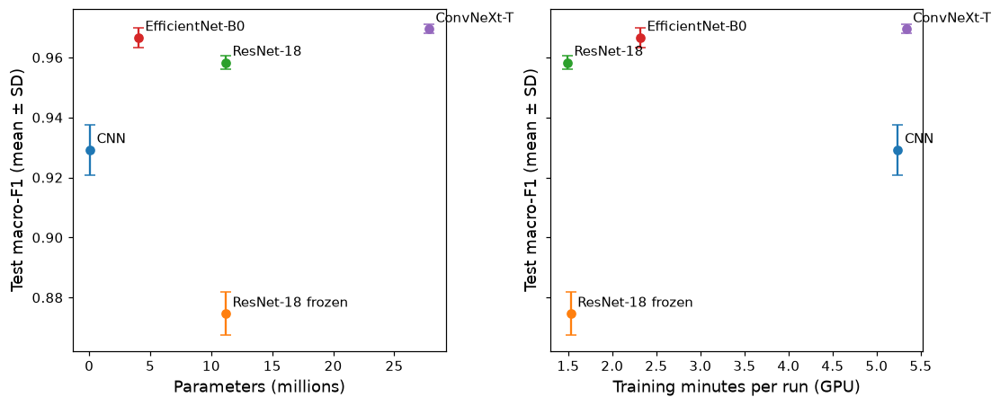
On one A40, ResNet-18 fine-tuning takes 1.5 minutes instead of 39 on the CPU. GPU inference is about 0.5 ms per image for the CNN and every ResNet-18 run, because with zero DataLoader workers the time is mostly spent loading and normalising batches on the CPU, not in the network; only ConvNeXt-T is clearly slower (1.1 ms). Strong augmentation triples the epoch time (70 s against 23 s) for the same reason. On the CPU the picture is different: EfficientNet-B0 has 2.8 times fewer parameters than ResNet-18 but is slower (18.1 against 10.2 ms), since depthwise convolutions do little work per memory access, and ConvNeXt-T is 3 to 3.5 times slower than ResNet-18. The follow-up CPU is faster than the one of the main study (ResNet-18 10.2 against 23.4 ms), and it is shared with other users, so its times moved by up to 30% over three measurements, although the order never changed; only the ratios should be read.
Comparison and discussion
| Experiment | Decision | Evidence |
|---|---|---|
| E1: pretrained vs baseline | Supported | Full fine-tuning 0.959 vs CNN 0.927 vs frozen 0.875 macro-F1; same order in all 5 seeds |
| E2: strong aug., 4 epochs | Not supported | Web-style -5.6 pt, macro-F1 -1.3 pt, 0/5 seeds better |
| E3: frozen vs full, same schedule | Supported | Full +6.8 pt at (10-3, 6) and +25.7 pt at (10-4, 4), 5/5 seeds each |
| E4: strong aug., 8 epochs | Not supported | Web-style -4.4 pt, macro-F1 -1.1 pt, 1/5 seeds better |
| E5: backbone | Supported | ConvNeXt-T +1.1 pt, EfficientNet-B0 +0.8 pt macro-F1; web-style +12.9 and +6.3 pt; 5/5 seeds |
| Hardware check | Reproduced | GPU vs CPU within one seed SD for all three recipes |
Which method is better, and by how much. Among the planned models, full fine-tuning of ImageNet ResNet-18 is the best: 0.959 macro-F1, 3.2 points above the CNN trained from scratch and 8.5 above the frozen backbone. In the follow-up study a newer backbone adds another 0.8 to 1.1 points (EfficientNet-B0 0.967, ConvNeXt-T 0.970). On the lab images these differences are small, since every fine-tuned model is above 99.4% accuracy. They are large on web-style photos, where accuracy goes from 26% (CNN) and 31% (frozen) to 49% (ResNet-18), 55% (EfficientNet-B0) and 62% (ConvNeXt-T).
Where the differences come from. (1) Data: 94% of the images are uniform lab crops, so even a 61K-parameter CNN reaches 98% on them; almost all remaining errors are on the 6% of web-style photos, which are under-represented in training. (2) Pretraining and adaptation: ImageNet features help only when they are adapted. Frozen, they cannot separate the small lesions of the four spot / blight diseases (54 such errors per seed) and lose even to the small CNN; E3 shows this is due to freezing and not to the recipe. (3) Backbone: the ranking on web-style photos follows the ImageNet top-1 accuracy of the torchvision weights (ResNet-18 69.8%, EfficientNet-B0 77.7%, ConvNeXt-T 82.5%), so better general features seem to carry over to cluttered field photos. This is the only change in the project that clearly reduces the domain gap. (4) Training: generic augmentation did not imitate field conditions and made the task harder for the model (E2, E4), while a longer budget for plain fine-tuning helped a little.
Accuracy, speed and size. On the CPU the CNN is 8 times faster than ResNet-18 at inference for 3.2 fewer macro-F1 points; if only lab images matter, it is a reasonable choice. For field use the web-style results matter more: EfficientNet-B0 gives 0.967 macro-F1 and 55% on web-style photos with 4.0M parameters, and ConvNeXt-T gives the best results (0.970, 62%) at about 3 to 3.5 times the CPU latency of ResNet-18. On a GPU all models classify an image in about 1 ms or less, and the bottleneck is data loading.
What cannot be concluded yet. The web-style subset has only 82 test images and is defined by image size, so its accuracies have SDs of 2 to 6 points and the subset is only a proxy for field photos. We did not test whether ConvNeXt-T helps because of its architecture or because of its pretraining recipe; both changed together. Per-class differences on Tomato mosaic virus (59 test images) are within noise.
Limitations and conclusion
Data. The split keeps 88 near-duplicate test images, some with a different label; the clean-subset check shows they change scores by at most 0.15 points. Labels were not checked by an expert. Web-style images are identified by a size rule, not by their true source.
Method. Each model uses one fixed recipe without a hyperparameter search; E3 shows that the learning rate matters a lot for the frozen model, so a search could move individual numbers. Only generic augmentations were tried. The images are squeezed to 224×224, which may lose lesion detail and distort non-square field photos.
Experiments. Five seeds per configuration; the main study and the follow-up study ran on different hardware, so their times are compared only through ratios, while their scores agree within one SD (hardware check). The test set was used once per run, but 45 follow-up runs were designed after seeing the main results, so the follow-up decisions are confirmatory only for their own pre-set rules.
Generalisation and future work. The models are near perfect on lab photos and still miss 38% (ConvNeXt-T) to 51% (ResNet-18) of the web-style photos, so they should not be trusted on field images yet. Next steps: add field images to training (for example the full PlantDoc training set), crop or segment the leaf before classification, use field-like augmentation (background replacement, blur, lighting), and report a source-separated test set.
Answer to the research question. ImageNet pretraining helps on this task only with full fine-tuning: it adds 3.2 macro-F1 points over a small CNN, while a frozen backbone is 5.3 points worse than the CNN, and this gap is caused by freezing, not by the training recipe. Strong generic augmentation does not help, even with twice the epochs. The backbone matters most for the hardest images: ConvNeXt-T reaches 0.970 macro-F1 and raises accuracy on web-style photos from 49% to 62%, at about 3 to 3.5 times the CPU cost of ResNet-18. The main remaining problem is the domain gap between lab and field photos, not the choice among fine-tuned models.
AI Usage Disclosure
The group used generative AI tools as disclosed below and in AI_USAGE.md of the repository. All numbers in this report are computed by the committed notebooks from saved run outputs; no number, figure or citation was written by an AI tool without being produced or checked by code or by the cited source.
| Field | Entry 1: M1 to M3 (whole assignment) |
|---|---|
| Tools | Claude (Anthropic) and ChatGPT (OpenAI), chat interfaces |
| Used by | All members |
| Purpose | Ideation, concept explanation, generic code examples, grammar and wording of notebook text (Sections 1–4 of AI_USAGE.md) |
| Verification | Every suggestion was checked against PyTorch / torchvision / scikit-learn documentation, the cited papers, and the actual run outputs |
| Field | Entry 2: M3 follow-up experiments and report drafting |
|---|---|
| Tool | Claude Code (Anthropic), model Claude Opus 5.5, running in the group's VS Code workspace |
| Used by | Võ Thị Như Quỳnh |
| Time / stage | 8–9 November 2026, after the 20 CPU runs and the results notebook were complete |
| Purpose | (1) Coding assistance: per-run device option in train.py / evaluate.py (with a CUDA synchronisation for GPU timing), the EfficientNet-B0 and ConvNeXt-T wrappers in models/backbones.py, the nine G_ configurations in configs/a2.yaml. (2) Experiment execution: the agent ran the group's training and evaluation scripts for the 45 GPU runs and built 03_analysis.ipynb. (3) Report writing: first draft of this LaTeX report from the notebooks and the M2 report. (4) Removal of the duplicate notebook 02_results_final.ipynb |
| Affected sections | Report Sections 1–3 (text), 2.3.3, 2.6, 3.8, 3.11; Assignment2/train.py, evaluate.py, models/backbones.py, configs/a2.yaml, 03_analysis.ipynb, README.md |
| Representative prompt | “Read the handbook requirements for Assignment 2 and complete the M3 final: run more experiments if needed, follow the style of Assignment 1, and write the M3 report from the LaTeX template.” |
| How output was edited and verified | The CPU results (E1, E2) were produced by the group before this stage and were not rerun or changed. Every GPU number comes from metrics.json and prediction files written by the scripts and is recomputed in 03_analysis.ipynb. The code changes keep the CPU path unchanged (default device and all CPU configurations untouched); they are reviewed with git diff before commit. Parameter counts were checked against the instantiated models |
| Responsible member | Võ Thị Như Quỳnh |
| Verification sources | PyTorch and torchvision documentation (model definitions, torch.cuda.synchronize); the cited papers; the saved run outputs and logs |
All members are able to explain every part of the submission and take responsibility for the submitted code, numbers, figures and text.
References
- L. Perinello and S. Giro, “Tomato Leaves Dataset,” Hugging Face dataset repository, 2024. A merge of PlantVillage and PlantDoc, tomato-leaf classes only. https://huggingface.co/datasets/lorenzoxi/vcs-tomatoes-dataset. Copy used in this work: https://huggingface.co/datasets/shreemunale/tomato-leaves-dataset, revision
c029791, CC BY 4.0. - D. P. Hughes and M. Salathé, “An open access repository of images on plant health to enable the development of mobile disease diagnostics,” arXiv preprint arXiv:1511.08060, 2015. https://arxiv.org/abs/1511.08060
- D. Singh, N. Jain, P. Jain, P. Kayal, S. Kumawat, and N. Batra, “PlantDoc: A dataset for visual plant disease detection,” in Proceedings of the 7th ACM IKDD CoDS and 25th COMAD, pp. 249–253, 2020. https://arxiv.org/abs/1911.10317
- K. He, X. Zhang, S. Ren, and J. Sun, “Deep residual learning for image recognition,” in Proceedings of the IEEE Conference on Computer Vision and Pattern Recognition (CVPR), pp. 770–778, 2016. https://doi.org/10.1109/CVPR.2016.90
- O. Russakovsky et al., “ImageNet large scale visual recognition challenge,” International Journal of Computer Vision, vol. 115, no. 3, pp. 211–252, 2015. https://doi.org/10.1007/s11263-015-0816-y
- M. Tan and Q. V. Le, “EfficientNet: Rethinking model scaling for convolutional neural networks,” in Proceedings of the 36th International Conference on Machine Learning (ICML), PMLR 97, pp. 6105–6114, 2019. https://arxiv.org/abs/1905.11946
- Z. Liu, H. Mao, C.-Y. Wu, C. Feichtenhofer, T. Darrell, and S. Xie, “A ConvNet for the 2020s,” in Proceedings of the IEEE/CVF Conference on Computer Vision and Pattern Recognition (CVPR), pp. 11976–11986, 2022. https://arxiv.org/abs/2201.03545
- S. Ioffe and C. Szegedy, “Batch normalization: Accelerating deep network training by reducing internal covariate shift,” in Proceedings of the 32nd International Conference on Machine Learning (ICML), PMLR 37, pp. 448–456, 2015. https://arxiv.org/abs/1502.03167
- D. P. Kingma and J. Ba, “Adam: A method for stochastic optimization,” in International Conference on Learning Representations (ICLR), 2015. https://arxiv.org/abs/1412.6980
- A. Paszke et al., “PyTorch: An imperative style, high-performance deep learning library,” in Advances in Neural Information Processing Systems 32 (NeurIPS), pp. 8024–8035, 2019. https://arxiv.org/abs/1912.01703